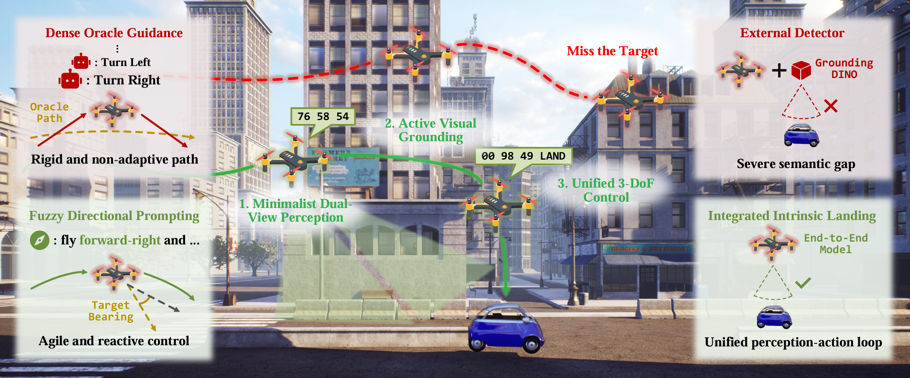
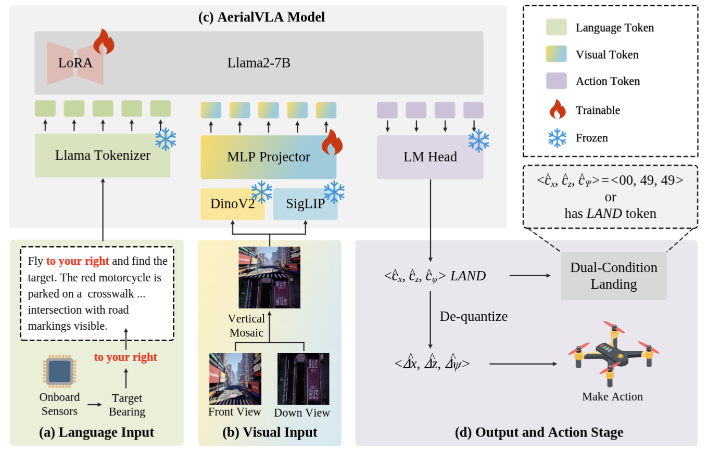

AeroVLA：从语言指令到自主飞行
围绕无人机视觉语言导航，复现双视角观测到连续飞行控制的端到端流程，理解多模态模型如何连接环境感知与行动。

个人角色：开源项目复现。本页根据原仓库文档与代码整理技术路线；原方法及插图归原作者所有。个人运行环境、实验日志与指标尚待补充。
01 / 项目与个人定位
AeroVLA 研究无人机在三维场景中的视觉语言导航：结合相机观测、目标描述与方向提示，预测飞行控制量和降落信号。原项目基于 OpenVLA，提供训练、模型推理、AirSim 闭环评估及指标统计代码。
我的工作以复现为主，关注数据如何组织、视觉与语言如何进入模型、输出如何解析为控制，以及如何在一致的评估设置下检查结果。这里将持续补充可复查的配置、轨迹和失败案例。
02 / 核心技术
- 双视角视觉输入：前视与下视图像纵向拼接，将航行场景与地面目标信息共同送入视觉处理流程。
- 方向提示：当前代码利用自机位置、姿态和目标位置计算机体坐标系下的相对方位，转成自然语言方向提示。复现时需明确目标位置的来源和可用条件。
- LoRA 微调：训练入口加载 OpenVLA-7B，通过 LoRA 调整模型，并将视觉投影层纳入训练保存配置。
- 统一动作表示：前向位移、垂直位移和偏航变化量被量化为数字文本，推理后反量化，并结合 LAND 信号进行动作执行与降落判断。

03 / 复现路线
以下是围绕现有代码整理的复现步骤，完成情况将以实际运行记录为准。
- 环境与数据准备：记录 Python、PyTorch、CUDA 和设备版本，准备 OpenVLA 基础权重、LoRA 权重、TravelUAV 数据与 AirSim 场景，生成评估所需的 merged_data.json。
- 输入与动作核对：沿数据集、模型包装器与环境接口检查双视角拼接、提示构造、量化范围、坐标系及降落条件。
- 单场景闭环评估：配置地图、模型路径和仿真端口，检查“观测 → 预测 → 执行 → 状态更新”循环，保存轨迹与失败片段。
- 分组统计：扩展到已见场景、未见目标与未见地图，对比原项目对应设置，记录样本数和评估配置。
代码核对笔记：当前 eval_aerovla.sh 默认输出到 aero_vla，而 metric.sh 将 MODEL_NAME 写为 aerial_vla，且未读取命令行模型名参数。汇总前应将两者对齐，避免统计到错误目录。
主要阅读入口：src/aerovla_dataset.py、src/train_aerovla.py、src/model_wrapper/aerovla_wrapper_ui.py、src/vlnce_src/eval_aerovla.py。
04 / 评估与进展
原项目提供 SR、OSR、NE、SPL 的统计流程。本页尚未录入个人复现结果，不将原论文的表现作为个人实验成果。
| 评估划分 | 记录内容 | 个人结果 |
|---|---|---|
| 已见场景 | SR / OSR / NE / SPL、地图与任务数 | 待补充 |
| 未见目标 | 目标变化下的导航与降落表现 | 待补充 |
| 未见地图 | 新环境中的任务完成与失败案例 | 待补充 |
接下来补充：运行环境与配置、评估日志、实际轨迹或演示，以及和原项目设置差异的说明。
05 / 来源与资料
原项目作者：Peng Xu、Zhengnan Deng、Jiayan Deng、Zonghua Gu、Shaohua Wan。技术介绍与图片来自原仓库，本页个人角色为复现。